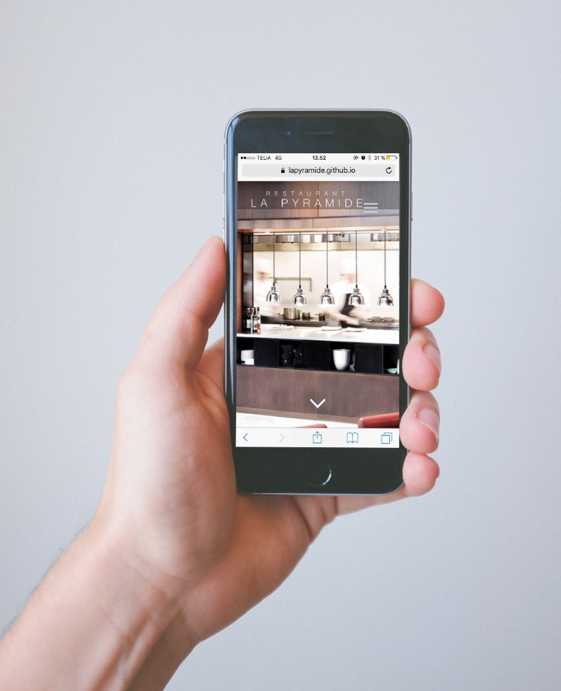

PROJEKT 1.3
Gruppemedlemmer: Theodor, Amalie og Karoline
Kunde: Restaurant La Pyramide
Dato: 23. oktober - 23. novemner 2017
Hjemmesiden: https://lapyramide.github.io
Projekt 1.3 handler om at skabe et website, der udforsker mobile first paradigmet og respomsive Web Design strategien. Der skulle finde en rigtig kunde efter eget valg, det eneste krav der var, var at det skulle være en kunde i Danmark. Det skal omhandle en virksomhed, som ikke har en hjemmeside, der er responsive. Vi lavede en masse research på nettet, for at finde en restaurant i Aarhus, der ikke havde en mobil venlig side, og vi faldt hurtigt over Restaurant La Pyramides hjemmeside, som vi besluttede os for, skulle være vores kunde til case 3.
Vi gik ud for at observere Restaurant La Pyramide, og hvilke kunder der befandt sig på stedet, dette gjorde vi både en eftermiddag, men vi kom også forbi en aften, fordi tidspunkterne for en restaurant er forskellig angående kunderne. Vi fik også lavet en kvalitativ undersøgelse via et interview med La Pyramides restaurantchef Simon Iversen. Vi fik en masse informationer omkring La Pyramides målgruppe, men han fortalte også en masse andre vigtige ting omkring La Pyramide, som vi kunne bruge senere hen. Vi var også ude og lave en kvantitativ undersøgelse, via et spørgeskema vi havde lavet, det var meget grænseoverskridende, at skulle stoppe folk på gaden og spørge om, de havde tid til at svare på vores spørgeskema.
Vi var også ude og besøge restauranten igen, og der fik vi snakket med deres kunder, hvor vi virkelig fik en masse godt af vide af dem, sådan at vi nu kunne bygge videre på vores wireframes og mock ups. Logo’et blev skitseret ned, og der blev lavet eksemplar i illustrator, også blev vi alle tre enige omkring, hvilket logo der ville passe bedst til restaurant La Pyramide. Restaurantchefen Simon Iversen roste også vores logo, og sagde han synes det passede rigtig godt til selve restauranten La Pyramide, og selve hjemmesiden havde et nordisk look, som han var ret vild med.
Vi nåede til, at vi skulle lave mobil sitet. Vi skulle nok havde lavet det samtidig med, at vi lavede hjemmeside til desktop, men da vi har lært at lave desktop først og derefter mobil/tablet site, så var det rigtig svært for os i gruppen at lave det omvendt, end vi havde lært, så derfor blev mobil/tablet siden lavet efter, at hjemmesiden var færdig. Hvis vi måske havde lært at lave det sammen eller mobil site først, så ville det måske være nemmere, så man ikke skulle til at omstille sig, men det er jo hvordan jeg tænker. Mobil siden blev lavet, og den blev virkelig god, af at det var første gang, vi alle i gruppen prøvede at lave mobil site helt fra bunden til en hel hjemmeside.
Men alt kan ikke gå som smurt i olie hele tiden. Der havde hele perioden, siden vi fik case 3 af vide været forvirring omkring, hvornår vi skulle aflevere case 3, men til sidst blev vi alle fra klassen enige om, at det nok var fredag, lærerne var blevet enige om. Så alle grupper regnede med, at vi havde til og med fredag. Men mandag aften får vi en notifikationer på Canvas appen omkring, at vi skulle aflevere torsdag kl. 12, alle var i chok og blev stresset, fordi vi havde regnet med, vi havde en dag mere til det. Så derfor blev hele ens tidsplan ændret, og vi havde nu kun 2 dage i stedet for 3 dage til at lave hjemmesiden på. Det er noget af det, som har været dårligt ved case 3, nemlig det at der hele tiden har været ændringer omkring, hvilken dato vi skulle aflevere. Jeg ved godt det sagtens kan ske ude på arbejdslivet, men stadig det er kun vores 3. opgave, også skal der altså bare være styr på det, synes jeg.
Selve gruppearbejdet, var så perfekt, det kunne ikke havde gået bedre. Vi var rigtig gode til at dele opgaverne ud, og hele tiden snakke med hinanden omkring, det her var en god idé at gøre det her, og især hjælpe hinanden hvis der var noget den ene ikke kunne, så kunne den anden det helt sikkert. Selvom der var uenigheder, så var vi meget gode til at give os eller blive enige om tingene, så selve os som gruppe var sat helt perfekt sammen, så det kunne ikke være bedre.